🧬 OlinkViz
Visualization Toolkit for Olink Proteomics Data


🔬 Ready-made, publication-quality visualizations for Olink NPX proteomics data — with 11 curated study datasets and an interactive Shiny dashboard. Volcano plots · Heatmaps · PCA · UMAP · Boxplots · Dot plots · Correlation matrices · Longitudinal trajectories · Sample QC · LOD detectability · ROC curves
✨ What is OlinkViz?
You’ve run your Olink assay and have a table of NPX values. Now you need to explore, visualize, and communicate your results — with plots that are ready for publication, not drafts you’ll have to polish later.
OlinkViz gives you a complete visualization toolbox that understands Olink data structures out of the box:
library(OlinkViz)
# One line to a publication-ready volcano plot — columns are auto-detected
plot_volcano(bansal_univariate)
# Or explore everything interactively
run_shiny()All plots use a clean, consistent theme and a colorblind-friendly palette. Every function handles the tedious preprocessing — wide/long pivoting, replicate averaging, NA imputation with warnings, zero-variance filtering — so you can focus on the biology.
No column arguments needed: plot_boxplot(npx, assay = "IL6"), plot_heatmap(npx), plot_corr(npx) and friends detect the standard Olink columns (assay, NPX, sample ID, group, time, …) automatically. For non-standard data, override with explicit arguments such as group = "condition" or pval_col = "pval".
Need a figure for a journal? Draw it at its final size instead of shrinking it: olinkviz_options(base_size = 7) sets the text size of every plot, and save_olinkviz(p, "fig2a", width = 89) exports at the exact column width (see Journal-Size Figures).
🎨 Gallery

Six of the nine plot types at a glance
Differential Expression
| Volcano Plot | Dot Plot |
|---|---|
 |
 |
| Fold change vs significance — Bansal Long COVID | Longitudinal effect sizes × significance (Visit 4 vs 1) |
Dimensionality Reduction
PCA (plot_dim_reduc(type = "pca")) |
UMAP (plot_dim_reduc(type = "umap")) |
|---|---|
 |
 |
| Linear projection with visit ellipses — BeatMG | Non-linear manifold projection — BeatMG |
Expression Patterns
| Heatmap | Correlation Matrix |
|---|---|
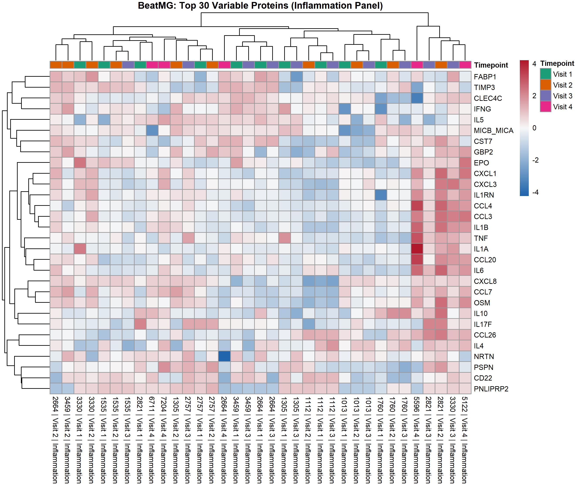 |
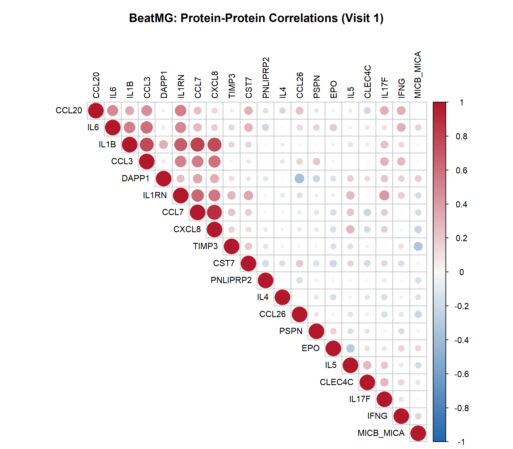 |
| Top 30 variable proteins, visit annotation | Spearman correlations — BeatMG Visit 1 |


Single-Protein & Longitudinal Views
| Boxplot | Trajectory |
|---|---|
 |
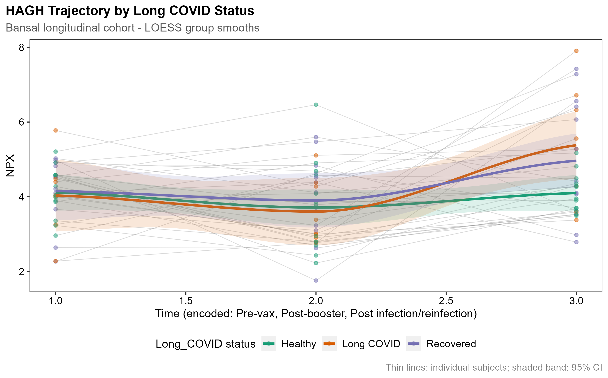 |
| IL6 by Long COVID status with Wilcoxon test | HAGH paths + group LOESS smooth — Bansal |

Built-in Theme & Palette

Four proteins over time · theme_olinkviz() · olinkviz_palette() — IRIS Long COVID
✅ Quality Control & Biomarker Performance
Four core checks shown on the simulated probc cohort: sample QC (median NPX versus IQR with outlier flagging), assay detectability (percent of samples above LOD), plate-level median distributions (plot_plate_qc()), and ROC curves with 95% CI shading and paired DeLong tests (plot_roc()). See the full walkthrough in Plots Generated from the Simulated Dataset (PROBC).

plot_qc() + plot_lod() combined with olinkviz_combine() using a compact bottom legend
| Plate QC | ROC Curves (95% CI & DeLong Test) |
|---|---|
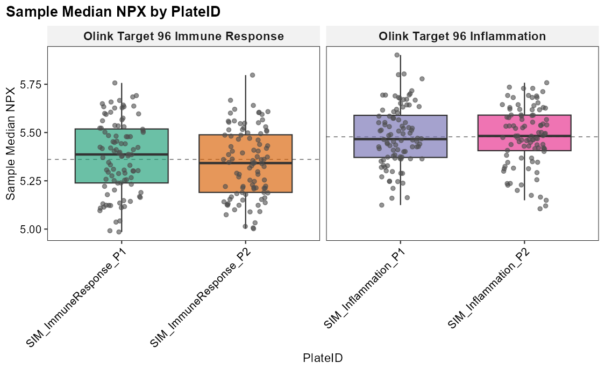 |
 |
plot_plate_qc(): sample median NPX by plate and panel |
plot_roc(): 95% CI ribbons and paired DeLong p-values |

p_qc <- plot_qc(probc, color_by = "PlateID", sd_cutoff = 2.5)
p_lod <- plot_lod(probc, threshold = 75)
olinkviz_combine(p_qc, p_lod, journal = "nature") &
ggplot2::theme(legend.position = "bottom", legend.box = "horizontal")
plot_plate_qc(probc)
base <- probc[probc$Timepoint == 1, ]
plot_roc(base, assays = c("IL6", "TNF", "CXCL12"), group = "Project",
add_ci = TRUE, boot_n = 100, show_direction = TRUE,
compare = TRUE, compare_method = "delong", palette = "okabe_ito")🖨️ Journal-Size Figures
By default text and marks are sized for the screen (11 pt). A figure drawn on a large canvas and shrunk to a journal column ends up with text that is too small, or with labels that collide. Draw it at its final size instead: one option sets the text size of every plot_*() function, and save_olinkviz() exports at the exact physical size. The figure below is 183 mm wide (a double column), with 7 pt text and left and bottom axes only; it passes a rendered text-size and collision audit.

Four panels at 183 mm, 7 pt: PCA, a mean profile, a volcano plot of per-subject means (FDR), and a boxplot — simulated probc
old <- olinkviz_options(base_size = 7, axes = "l") # 7 pt text, left + bottom axes
p <- plot_boxplot(probc, assay = "IL6", group = "Project")
save_olinkviz(p, "il6_boxplot", width = 89, height = 70) # one column, PDF + PNG
options(old) # back to the defaultsCombine panels with patchwork and save the whole figure with the same call; scripts/generate_figures_journal.R builds the figure above. Tick labels are base_size - 1, the smallest text in a plot, so use 7 for most journals and 9 where the minimum is 8 pt. Any base size below the 11 pt default is journal-size mode: long titles wrap, plot_corr_triangle() fits its circles to a single column, heatmaps with more than 30 samples (at 7 pt) leave out the sample names, and -log10 labels are plain text (a typeset subscript is drawn at 70 percent size, which falls below the 5 to 6 pt minimum most journals ask for). At the default size none of this applies. plot_heatmap() and plot_corr() draw with base graphics: open the device yourself (for example grDevices::cairo_pdf()), call the function, and close it.
📖 Paper-Inspired Analyses

Recreating the visualization strategy of Al-Nesf et al. (Nat Commun 2022)
The figures below recreate the visualization strategy of Al-Nesf et al. (2022), “Prognostic tools and candidate drugs based on plasma proteomics of patients with severe COVID-19 complications”, Nature Communications 13:2406 — applied to the datasets bundled with OlinkViz. The paper profiled 893 plasma proteins with Olink panels and used ROC curves, unsupervised clustering, PCA, correlation networks and feature selection to build a 12-protein COVID-19 severity signature. Each figure maps one of those ideas onto the bundled cohorts.
Classification & Model Performance (paper Fig. 1a, 5c)
| Per-Panel DEP Counts & ROC | 12-Protein Signature ROC |
|---|---|
 |
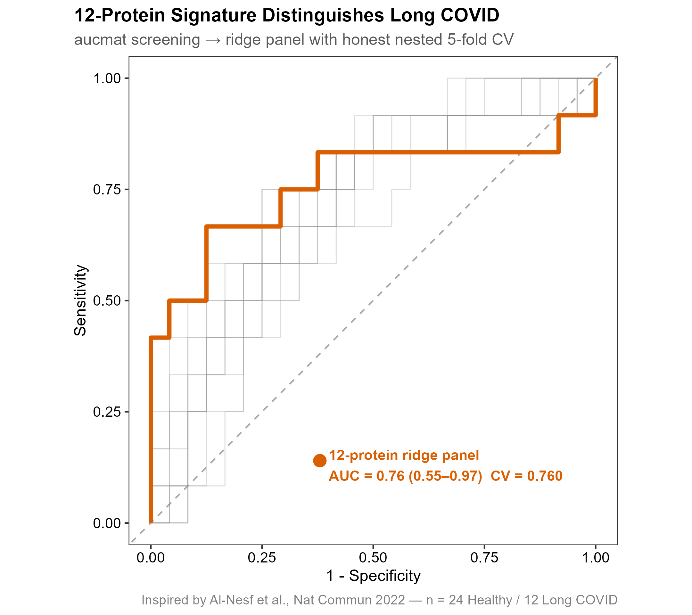 |
| DEP counts per panel + per-panel ROC with AUC — Bansal | Sign-weighted 12-protein signature ROC vs Healthy — Bansal |

Unsupervised Structure (paper Fig. 1b)
| Clustering Heatmap | PCA by Group |
|---|---|
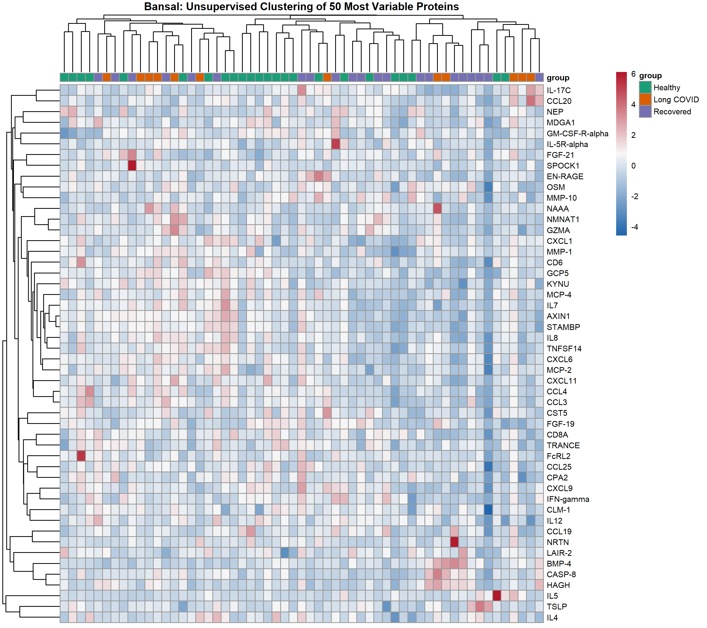 |
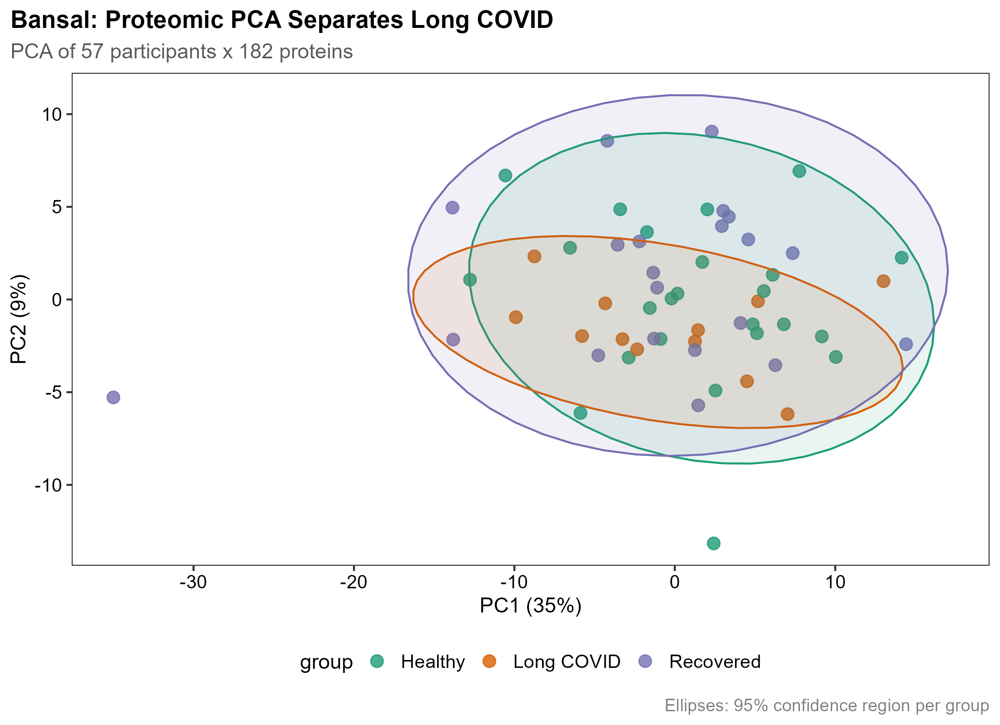 |
| Z-score heatmap, correlation distance + average linkage | PCA separates Long COVID from Healthy / Recovered — Bansal |


Deregulation & Clinical Correlations (paper Fig. 2, 3)
| Deregulated Protein Bubble Plot | Protein × Clinical Marker Correlations |
|---|---|
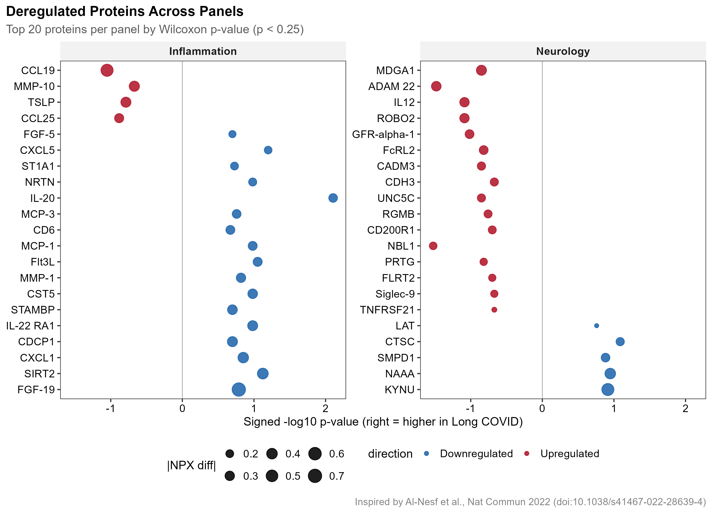 |
 |
| Signed -log10 p bubble plot per panel — Bansal | Spearman rho of top proteins vs vital signs — BeatMG |

Networks & Dynamics (paper Fig. 4/5b, 6b, 7a)
| Protein Correlation Network | Mean ± SEM Time Curves | Group Boxplots |
|---|---|---|
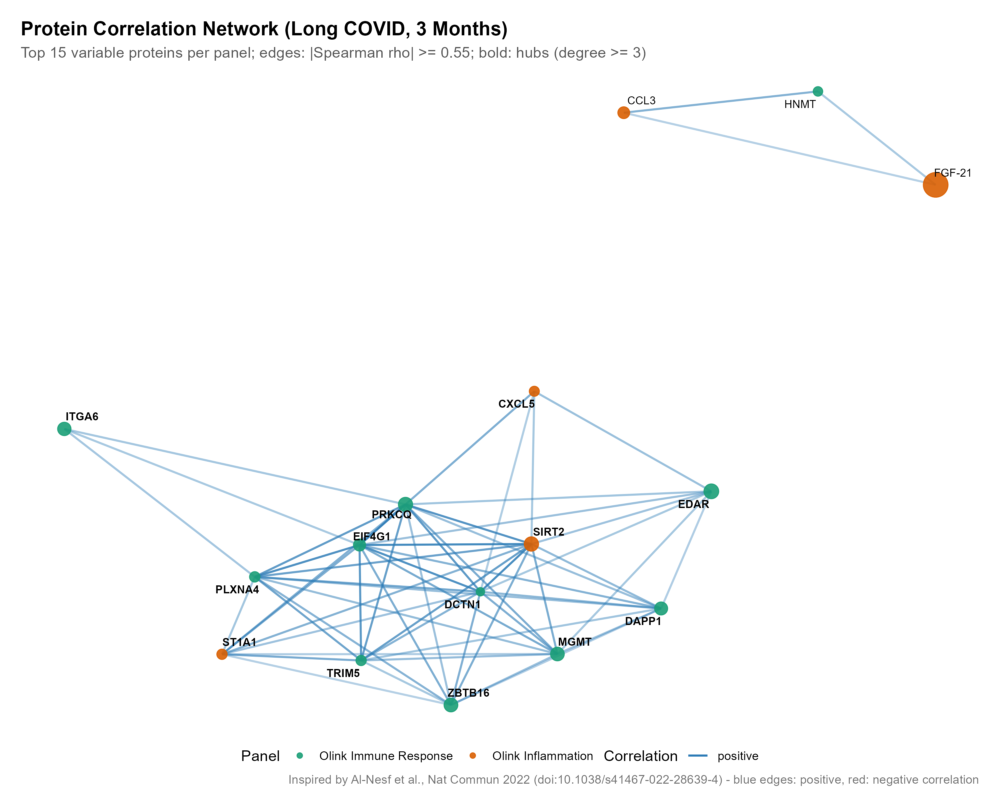 |
 |
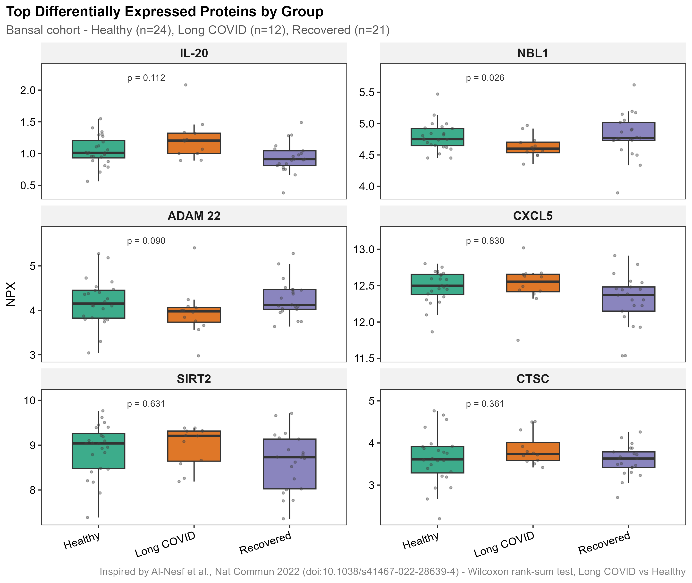 |
| Correlation network of top proteins — IRIS | Protein trajectories by Long COVID status — IRIS | Top DE proteins across groups — Bansal |


Reproduce every figure with scripts/generate_figures_paper.R, or step through the code in the vignette.
🫀 Cardiometabolic Biomarker Analyses
The second template comes from Tan et al. (2025), “Identification of Cardiometabolic Protein Biomarkers for Acute Myocardial Infarction Using Olink Proteomics”, Journal of Inflammation Research, which profiled 92 cardiometabolic proteins in AMI patients versus controls and combined differential expression with GO/KEGG enrichment, STRING protein-protein interaction networks, correlation networks linking proteins to clinical indicators, and combined ROC curves for core biomarkers. The figures below reproduce those analyses on the bundled cohorts — GO/KEGG enrichment and the PPI network use the live gProfiler and STRING web APIs.
| Clinical Indicators by Group | Top DEP Heatmap |
|---|---|
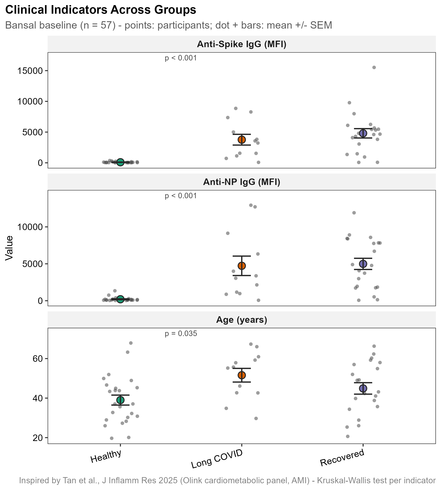 |
 |
| Age & antibody titers across groups, mean ± SEM — Bansal | Top 25 differentially expressed proteins — Bansal |

| GO & KEGG Enrichment | STRING PPI Network |
|---|---|
 |
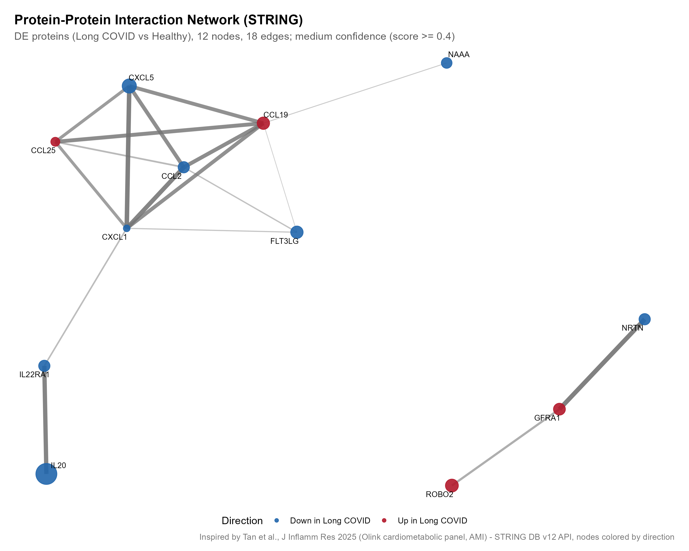 |
| gProfiler GO:BP + KEGG of DE proteins | STRING medium-confidence interactions, colored by direction |

| Protein–Clinical Correlation Network | Core-Protein ROC Curves |
|---|---|
 |
 |
| Bipartite protein × vital-sign network — BeatMG | Individual + combined ROC for 5 core proteins — Bansal |
Reproduce every figure with scripts/generate_figures_jir.R, or step through the code in the vignette.
🧬 ALS Phenoconversion Biomarker Analyses
The third template comes from Ran X, Wuu J, Qin ZS, et al., Benatar M. (2026), “Longitudinal plasma proteomics predict phenoconversion to clinically manifest ALS”, Nature Medicine 32, 3417-3429, which used longitudinal Olink Explore HT proteomics (516 samples, 137 participants) from asymptomatic carriers of ALS-associated gene variants to find a 19-protein panel predicting “phenoconversion” — transition to clinically manifest disease — up to 5 years ahead of symptom onset, via volcano plots, direction-split pathway enrichment, a protein/functional-module network, time-resolved heatmaps, Kaplan-Meier curves, ROC curves, an UpSet plot of predictive proteins, and a cross-cohort replication scatterplot. OlinkViz has no genetic-carrier ALS cohort, so the figures below map the same ideas onto the one bundled dataset with a real observed state transition over time: IRIS Long COVID participants who are Long-COVID-positive at the 3-month visit sometimes resolve by 12 months (11 of 23 with follow-up, confirmed from the raw data). Same underlying question — do early biomarkers anticipate a later change in clinical state? — opposite direction (recovery, not onset).
| Disease-State Volcano | Pathway Enrichment by Direction |
|---|---|
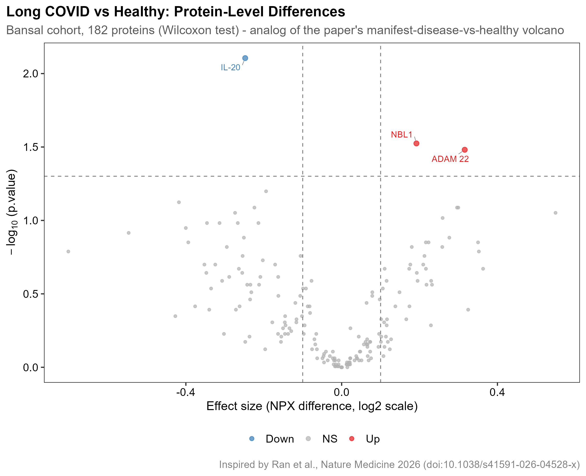 |
 |
| Long COVID vs Healthy — Bansal | GO/KEGG terms enriched among up- vs down-regulated proteins |

| Functional Module Network | Pre/Post Resolution Heatmap |
|---|---|
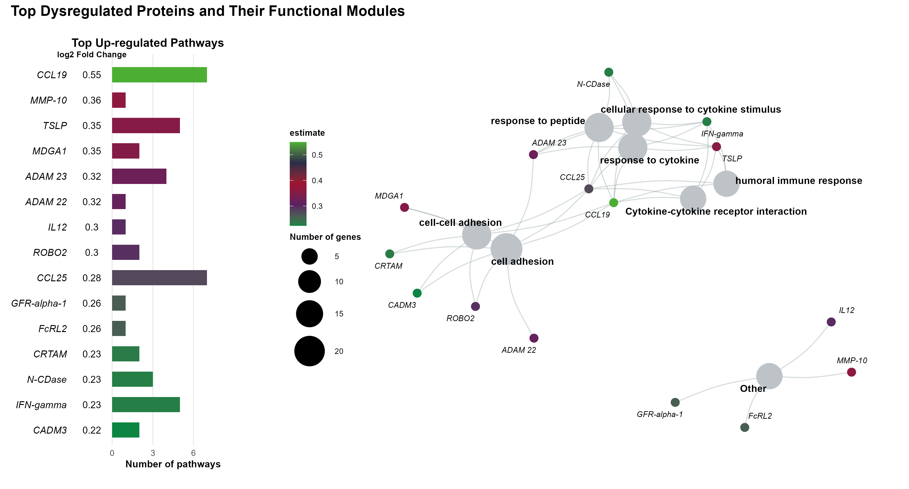 |
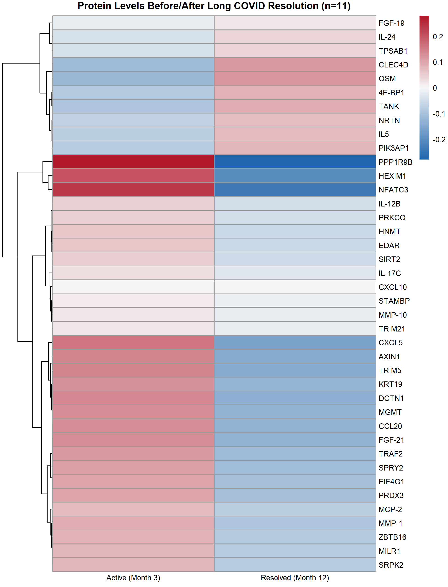 |
| Top dysregulated proteins by Olink panel — Bansal | Protein levels before/after Long COVID resolution — IRIS |


| Protein Trajectories | Resolution Kaplan-Meier |
|---|---|
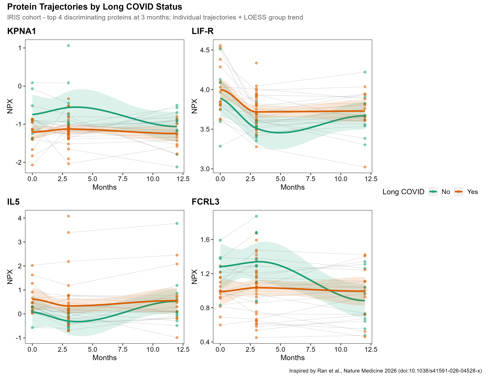 |
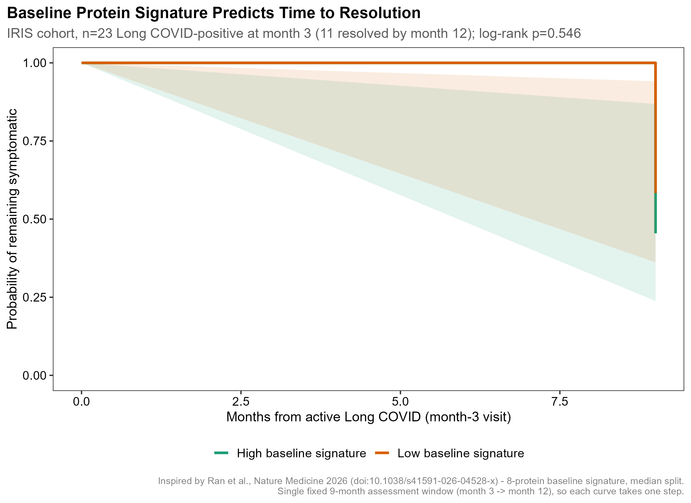 |
| Top 4 discriminating proteins over time — IRIS | Baseline signature vs time to resolution — IRIS |


| Resolution ROC + Protein Overlap | Cross-Cohort Replication |
|---|---|
 |
 |
| 8-protein ROC | UpSet of significant proteins across 3 analyses — IRIS | IRIS vs Bansal per-protein effect-size correlation |
Reproduce every figure with scripts/generate_figures_natmed.R, or step through the code in the vignette.
🧪 Quick Reference
|
🔬 Differential Expression
|
📊 Dimensionality Reduction
|
|
🔍 Single-Protein & Longitudinal
|
🗺️ Survey-Level
|
|
✅ Quality Control & Performance
|
🖨️ Journal-Size Figures
|
📦 Bundled Datasets
12 curated Olink datasets from published studies and simulated cohorts are bundled with the package:
| Dataset | Study | Proteins | Samples | Description |
|---|---|---|---|---|
iris_longcovid |
IRIS — 10.5281/zenodo.13363117 | 180 | ~2,300 | Long COVID (7 time points) |
bansal_baseline57 |
Bansal — 10.1038/s43856-026-01541-6 | 182 | 57 | Long COVID baseline |
bansal_longitudinal |
Bansal — 10.1038/s43856-026-01541-6 | 182 | 34 | Long COVID paired longitudinal |
bansal_univariate |
Bansal — 10.1038/s43856-026-01541-6 | 182 | — | Per-protein Wilcoxon results |
beatmg_npx |
BeatMG — 10.1212/WNL.0000000000013121 | 738 | ~2,000 | Myasthenia Gravis NPX |
beatmg_npx_merged |
BeatMG — 10.1212/WNL.0000000000013121 | 738 | ~2,000 | MG NPX + demographics |
beatmg_demo |
BeatMG — 10.1212/WNL.0000000000013121 | — | 52 | MG clinical variables |
pcnsl_olink |
PCNSL — 10.5281/zenodo.20815686 | 1,007 | 172 | Primary CNS lymphoma |
qinfeng_npx |
Song 2025 — 10.1007/s00011-025-02020-9 | 92 | 66 | Tuberculosis biomarkers |
tofa_data |
TOFA — 10.7554/elife.99323 | Multiple | — | Down Syndrome NPX |
tofa_dictionary |
TOFA — 10.7554/elife.99323 | — | — | TOFA variable dictionary |
probc |
Simulated cohort (PROBC) | 184 | 192 | Simulated 2-group longitudinal NPX |
data(package = "OlinkViz") # list all datasets
?iris_longcovid # dataset documentation🛠️ Data Utilities
| Function | What it does |
|---|---|
validate_npx() |
Check data has required NPX columns (assay, value, sample) |
to_wide() |
Long → wide format with replicate averaging and metadata preservation |
to_long() |
Wide → long format with auto-detection of protein columns |
theme_olinkviz() |
Clean, publication-ready ggplot2 theme (base_size and axes follow the options below) |
olinkviz_options() |
Set the text size and axis style of every plot, e.g. base_size = 7 for a journal column |
save_olinkviz() |
Save a plot at an exact physical size (mm, cm or in) as PDF, PNG, SVG and/or TIFF |
olinkviz_palette() |
Colorblind-friendly categorical palette (Dark2 + interpolation) |
run_shiny() |
Launch interactive Shiny dashboard |
# Validate your data
validate_npx(my_data)
# Convert between formats
wide <- to_wide(long_data)
long <- to_long(wide, id_cols = "SampleID")🖥️ Interactive Shiny App
OlinkViz::run_shiny()- Browse all 11 built-in datasets with variable descriptions
- Upload your own CSV or Excel NPX files
- Select from 8 plot types with adjustable parameters
- Filter by assay, timepoint, and group
- Download publication-ready plots as PNG or PDF
📖 Vignettes
| Vignette | What you’ll learn |
|---|---|
| Getting Started | Installation, first plots, data utilities, complete workflow |
| Simulated Cohort Workflow (PROBC) | Full QC, ordination, longitudinal trajectories, LMM, DE, correlation, and ROC with CI & DeLong tests on probc
|
| All Plots on One Dataset | Every plot_*() function demonstrated side-by-side on a single dataset |
| Biomarker Discovery | Multi-cohort biomarker prioritization, replication, and ROC panel evaluation |
| Journal-Size Figures | Multi-panel layouts, exact column widths, font/line preflight checks, and vector export |
📖 Citation
If you use OlinkViz in your work, please cite:
@software{tran2026olinkviz,
author = {{Lucas VHH TRAN}},
title = {OlinkViz: Visualization Toolkit for Olink Proteomics Data},
year = {2026},
publisher = {Zenodo},
version = {0.1.0},
doi = {10.5281/zenodo.XXXXXXX}
}🤝 Contributing
Bug reports, feature requests, and pull requests are welcome. See CONTRIBUTING.md and the Code of Conduct.
📜 License
MIT © 2025 Lucas VHH TRAN. See LICENSE.md.
Built with 🧬 and 📊 for the Olink proteomics community.